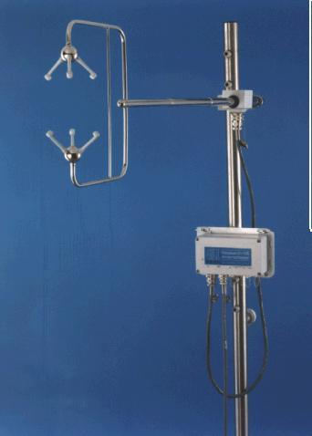

|  |
Currently, three HS-50 model sonic anemometers are deployed on the site, (located at the tops of masts of heights 10m, 25m and 50m), but a number of HS model anemometers are also available for use. These two instruments are essentially the same, except that the HS-50 measures at a raw sampling rate of 50Hz as opposed to 100Hz.
The anemometers are logged at a rate of 10Hz (block averages over the raw sampling rate). This rate is sufficient to resolve the small scale eddies in the atmosphere at the three measurement heights.
v = 0.5L * ( 1/t1 - 1/t2 )
where t1 and t2 are the measured times for the pulses to travel in each direction,
and L is the distance between the transducers.
This measurement is carried out for each of the three transducer pairs in turn. A mathematical transformation is then performed, to convert the resulting three wind vectors into U,V,W format, where U and V are the horizontal wind components parallel and perpendicular to the instrument axis, and W is the vertical wind component. A correction is then applied, to calibrate out the affects of the transducers and instrument frame on the airflow.
In addition to computing the wind vectors, the sonic anemometer also uses the time-of-flight measurement to calculate the speed of sound (c) along each axis. From this, the sonic temperature (equivalent to the virtual temperature) of the air is derived, using relationship:-
Tv = c2 /403
The speed of sound value used in the above calculation is the mean quantity derived from each of the three
axes. A correction must then be applied to take into account the effect of the cross-wind
normal to the measurement axes. The resulting virtual temperature, can then be converted into a true temperature,
assuming that the pressure and humidity are known.
Note that the accuracy of the sonic derived temperature, is not generally good enough to be relied on as a true temperature measurement. (It can be up to 2-3oC off.) This is largely due to the fact that it is highly sensitive to very small errors in the speed of sound measurement. However, this is not particularly important, beacause primary purpose of the sonic temperature is as a fast response measurement which can be combined with the W wind component in order to calculate heat fluxes. A separate PRT sensor is normally used for absolute measurements of temperature.
The electronics box of the anemometer is equipped with 6 analogue input channels, plus a dedicated PRT temperature sensor input. This allows external sensors to be connected to the sonic and logged at the same time.
Each complete measurement cycle is carried out at a rate of 100Hz (or 50Hz for the HS50 anemometer). The wind and sonic temperature data is then averaged over the desired number of cycles, and sent to the serial output of the instrument, along with the digitised output from any external sensors connected to the anemometer. The output from an inbuilt inclinometer is also included in the data stream. This information can be used in subsequent data processing to correct for errors in alignment of the instrument.
Further information on the Gill HS sonic anemometers can be found at the Gill website:- www.gill.co.uk